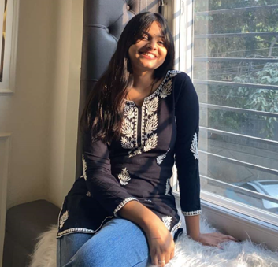

Bhavya Verma

Summary
Motivated and detail-oriented Computer Science student with a strong foundation in programming, web development,
and problem-solving. Adept at adapting to new technologies and environments, with a passion for building user-friendly
and efficient applications. Seeking opportunities to apply technical skills and grow professionally in the field of
Full-Stack Development.
Education
- B.Tech in Computer Science Engineering- The Northcap University
- 10th and 12th Grades (Non-Medical Stream)- DAV Public School.
Work Experience
- Personal Projects:
- Developing skills in Full-Stack Web Development through coursework and personal projects.
- Learning and implementing technologies like HTML, CSS, JavaScript, React, and Node.js.
Skills
- Programming Languages: Java, Python, JavaScript
- Web Development: HTML, CSS, React, Node.js
- Entrepreneurship: Managing a home-based bakery
- Time Management: Balancing academic responsibilities and business operations
Awards and Certifications
- AWS Online Course – Completed.
- Java Course from Coding Ninjas – Completed.
Others
My Hobbies
Contact Me